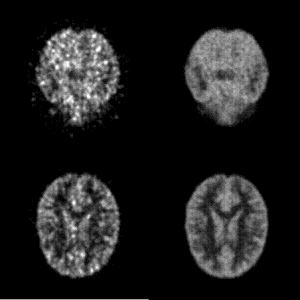

PETソフトウェア開発の背景
ＰＥＴは体内の機能を断層像として画像化する装置です。 ＰＥＴを用いることで従来困難であった初期がんを発見する ことが可能となっています。ＰＥＴでは、体内に放射性同位元素 で標識された薬剤を注入し、体内から放射されるガンマ線光子を検 出器で検出することでデータが得られます。
| fig1 : PETの原理 | fig2 : PETの例 |
一般的なＰＥＴにおける画像再構成法として、以前は解析的手法 が用いられてきました。しかし解析的手法では雑音の影響を大きく 受けた画像が現れてしまう問題があり、近年では解析的手法にかわり 統計的手法が適用されるようになりました。統計的手法の利点としては、 雑音の影響を軽減しやすいこと、体内におけるガンマ線光子の吸収や散 乱線の補正がしやすいことなどが挙げられます。しかし一方で計算量が 解析的手法に比べて多くなってしまうという問題があり、計算量の軽減 も課題になっています。
これら背景を踏まえ、当研究室ではより高精度、高速化したＰＥＴ画像 を再構成することを目標に研究を行っています。
統計的雑音を軽減する画像再構成法の研究
左の画像は解析的手法であるフィルタ補正逆投影法を用いたもの、 右は実際に当研究室で開発された統計的手法のアルゴリズムで 再構成された画像です。
| fig3 : 解析的手法 | fig4 : 当研究室で開発した手法 |
| fig5 : 解析的手法 | |
| fig6 : 当研究室で開発した手法 | |
３次元ＰＥＴの画像再構成法の研究
現在のＰＥＴの多くは検出器リング間での検出をカットした２次元ＰＥＴ と呼ばれる方式をとっていますが、ほとんどのガンマ線光子は検出されず、 効率が悪くなっています。これに対し近年では、検出器リング間での光子検出 も行うことで、検出効率を大幅に向上させた３次元ＰＥＴが注目されています。 この３次元ＰＥＴでは扱うデータの数が多く、計算量の軽減が重要な課題とな ってきます。そこでデータ量の削減のために従来のデータ取得方法とは違った、 リストモードデータと呼ばれる取得方法で取られたデータを用いて再構成を行う ことも研究しています。
リストモードデータの場合，データの測定と同時に画像再構成を行え測定後の再構成の時間を短縮することが可能となります．また装置としてみた場合，3次元に拡張した場合に従来の方式に比べて記憶領域の削減を行う事が出来ます。本研究では，リストモードデータからの再構成に関して観測と同時に再構成を行うワンパス画像再構成向けのアルゴリズムの開発を行っています。
|  |
| fig4 : OSEM法とDRAMA法の比較 |
画像左は従来用いられていたＯＳＥＭ法と呼ばれる手法を用いた画像、 画像右は近年提案されたＤＲＡＭＡと呼ばれる手法を３次元ＰＥＴに適用 した画像です。
近年の研究では従来のアルゴリズムがパラメータの設定が難しいという問題を解消するアルゴリズムを開発しました。従来手法(DRAMA)が2つのパラメータを適切に設定しないと右図のように反復を繰り返しても画質が向上しないのに比べて，提案手法では1つのパラメータの容易な設定で従来手法のパラメータ設定を適切に行った場合と同様に動くことが分かります。下図は提案手法と従来手法のDRAMA方を比較したアニメーションになります．左（提案手法），中央（適切にパラメータを設定した場合のDRAMA法）、右（パラメータ設定を誤った場合の従来手法）
| fig5 :ファントム画像を用いた場合のワンパス画像再構成 |
| fig6 :脳画像を用いたワンパス画像再構成 |
Copyright © 2005 Image Science Lab. All rights Reserved.